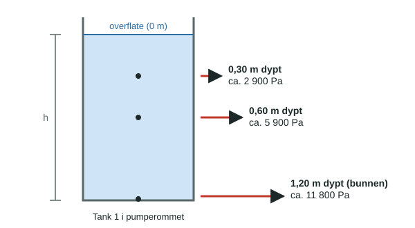
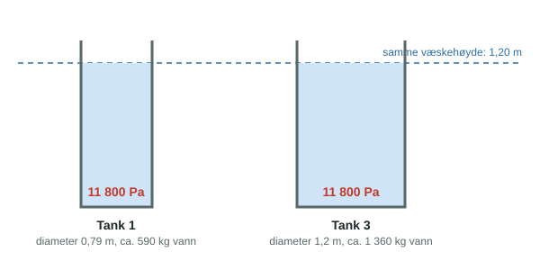

Trykk i væsker
Jo dypere du kommer i en væske, jo høyere blir trykket. Det merker du i ørene når du dykker i et basseng. I et prosessanlegg må du kunne regne med dette trykket når du leser trykkmålere, nivåmålere og datablad for pumper. Her bruker vi tankene i pumperommet på skolen som eksempel.
Væsken over presser nedover
Hva trykk er, og forskjellen på overtrykk og absolutt trykk, lærte du i Kraft og trykk. Nå ser vi på trykket inne i en væske.
Tenk deg et punkt nede i en tank. Over punktet står det en væskesøyle: all væsken rett over, helt opp til overflaten. Tyngden av denne væsken presser ned på punktet. Jo høyere søylen er, jo tyngre er den, og jo høyere blir trykket.
Trykket fra væskesøylen kalles hydrostatisk trykk. Det virker i alle retninger, også sidelengs mot tankveggen. Fordi trykket øker med dybden, spruter det kraftigere fra et hull nederst i en tank enn fra et hull høyt oppe.

Formelen: p = ρ · g · h
Trykket fra en væskesøyle regner du ut slik:
\[ p = \rho \cdot g \cdot h \]
- p = trykket fra væsken (Pa)
- ρ (rho) = tettheten til væsken (kg/m3). Vann har ca. 1000 kg/m3. Se Masse, volum og tetthet.
- g = tyngdeakselerasjonen, 9,81 m/s2
- h = høyden av væskesøylen over punktet (m)
Formelen gir trykket fra væsken alene. I en åpen tank med lufting presser lufta i tillegg på overflaten. Formelen gir derfor overtrykket, og det er det en vanlig trykkmåler viser. Vil du ha absolutt trykk, legger du til lufttrykket, ca. 1,013 bar.
Oppgave: Tank 1 i pumperommet er 1,25 m høy. Vannet står 1,20 m over bunnen. Hvor stort er overtrykket i bunnen? Svar i pascal og i bar.
Løsning:
- Hva vet vi? \( \rho = 1000 \text{ kg/m}^3 \), \( g = 9{,}81 \text{ m/s}^2 \), \( h = 1{,}20 \text{ m} \)
- Formel: \( p = \rho \cdot g \cdot h \)
- Sett inn: \( p = 1000 \cdot 9{,}81 \cdot 1{,}20 = 11\,772 \text{ Pa} \approx 11\,800 \text{ Pa} \)
- Gjør om til bar (1 bar = 100 000 Pa): \( \dfrac{11\,772 \text{ Pa}}{100\,000 \text{ Pa/bar}} \approx 0{,}12 \text{ bar} \)
Svar: Overtrykket i bunnen er ca. 11 800 Pa, eller ca. 0,12 bar. Absolutt trykk er ca. 1,013 + 0,12 ≈ 1,13 bar.
Bruker du kg/m3, m/s2 og m, får du svaret i pascal. Gjør om centimeter til meter først: 85 cm = 0,85 m.
Formen på tanken spiller ingen rolle
Bare høyden på væskesøylen teller, ikke hvor bred tanken er. Tank 3 i pumperommet er mye bredere enn tank 1, men like høy. Står vannet like høyt i begge, er trykket i bunnen det samme.

Det samme gjelder i rør. Et tynt rør som går 10 m rett opp, gir like høyt trykk i bunnen som en stor tank som er 10 m høy.
Tyngre væske gir høyere trykk
Tettheten står i formelen. En væske med høyere tetthet gir høyere trykk ved samme høyde:
| Væske i tank 1 (1,20 m) | Tetthet (kg/m3) | Overtrykk i bunnen |
|---|---|---|
| olje | ca. 900 | ca. 10 600 Pa (0,11 bar) |
| vann | ca. 1000 | ca. 11 800 Pa (0,12 bar) |
| saltlake | ca. 1200 | ca. 14 100 Pa (0,14 bar) |
Meter vannsøyle: trykk målt i høyde
Fordi trykket bare avhenger av høyden, kan du oppgi trykk som en høyde. Enheten meter vannsøyle (mVs) betyr trykket i bunnen av en vannsøyle som er så mange meter høy.
\[ 1 \text{ mVs} = 1000 \cdot 9{,}81 \cdot 1 = 9810 \text{ Pa} \approx 0{,}1 \text{ bar} \]
En nyttig tommelfingerregel er derfor: 10 meter vann gir ca. 1 bar. En dykker på 10 meters dyp har ca. 2 bar absolutt trykk rundt seg: 1 bar fra lufta og 1 bar fra vannet.
Pumper oppgis ofte i meter vannsøyle. Det kalles pumpens løftehøyde: hvor høyt pumpen kan løfte vann. På skiltet til pumpe 2 i pumperommet står det H = 15 mVs. Pumpen kan altså øke trykket med ca. 15 · 0,1 bar = 1,5 bar når den gir 20 m3/h. Mer om pumper kommer på siden Rør, ventiler og pumper.
Nivå målt med trykk
Du kan også snu formelen. Kjenner du trykket i bunnen, kan du regne ut hvor høyt væsken står:
\[ h = \frac{p}{\rho \cdot g} \]
Dette brukes i anlegg. Tank 1 i pumperommet har en DP-celle i bunnen. Den måler forskjellen mellom trykket i bunnen og lufttrykket, altså trykket fra vannet. Styresystemet regner det om til nivå. Hvordan slike målere er bygd og koblet til styresystemet, lærer du i Automasjon.
Oppgave: DP-cellen i bunnen av tank 1 måler et overtrykk på 8 830 Pa. Tanken inneholder vann. Hvor høyt står vannet?
- Formel: \( h = \dfrac{p}{\rho \cdot g} \)
- Sett inn: \( h = \dfrac{8830 \text{ Pa}}{1000 \text{ kg/m}^3 \cdot 9{,}81 \text{ m/s}^2} = 0{,}900 \text{ m} \)
Svar: Vannet står 0,90 m over bunnen.
Legg merke til at måleren bare er riktig hvis tettheten er riktig. Fyller du saltlake i tanken, viser den for høyt nivå hvis den fortsatt regner med tettheten til vann.
- Trykket er størst nederst. En flens eller ventil nede på en full tank står under trykk. Tøm tanken eller steng og sikre ventilene før du åpner noe under væskenivået.
- I høye tanker og lange rør blir trykket stort: 10 m væske gir ca. 1 bar. Det kan gi en kraftig stråle hvis en slange eller pakning løsner.
- Ikke fyll en tank over HH-nivået (høyt-høyt). I pumperommet stopper pumpene automatisk ved HH-nivå, men du skal aldri stole på at vernet alltid virker. Se overfylling i HMS.
Les av nivået i tank 1 på skjermen. Regn ut overtrykket i bunnen med \( p = \rho \cdot g \cdot h \). Hvor mye endres trykket når nivået stiger 10 cm?
Test deg selv
Hva bestemmer trykket fra en væske i bunnen av en tank?
- hvor mye væske det er i tanken totalt
- hvor høyt væsken står, og tettheten til væsken
- hvor bred tanken er
\( p = \rho \cdot g \cdot h \). Bare tettheten og høyden av væskesøylen teller. Bredden og den totale mengden spiller ingen rolle.
Vannet i en åpen tank står 2,0 m høyt. Hva er overtrykket i bunnen?
- ca. 2 000 Pa
- ca. 19 600 Pa
- ca. 196 000 Pa
\( p = 1000 \cdot 9{,}81 \cdot 2{,}0 = 19\,620 \text{ Pa} \approx 0{,}2 \text{ bar} \)
Omtrent hvor stort trykk gir en vannsøyle på 10 m?
- 0,1 bar
- 1 bar
- 10 bar
1 mVs er ca. 0,1 bar. 10 m vann gir derfor ca. 1 bar. Den regelen er nyttig å huske.
Du flytter en trykkmåler fra 0,5 m til 1,0 m under overflaten i en vanntank. Hva skjer med overtrykket den viser?
- Det blir halvparten så stort.
- Det er det samme.
- Det blir dobbelt så stort.
Trykket er proporsjonalt med høyden av væskesøylen. Dobbelt så dypt gir dobbelt så høyt overtrykk.
En pumpe har løftehøyde 15 mVs. Omtrent hvor høyt trykk kan den lage?
- 1,5 bar
- 15 bar
- 150 bar
1 mVs er ca. 0,1 bar, så 15 mVs er ca. 1,5 bar.
Ordliste
| Begrep | Forklaring | Engelsk |
|---|---|---|
| væskesøyle | All væsken rett over et punkt, helt opp til overflaten. Tyngden av søylen gir trykket i punktet. | |
| hydrostatisk trykk | Trykket fra en væske som står stille. Det øker med dybden og regnes ut med p = ρ · g · h. | |
| meter vannsøyle | Trykkenhet (mVs) som oppgir trykket som høyden av en vannsøyle. 1 mVs er ca. 0,1 bar. | metres of water column (mWC) |
| løftehøyde | Trykkøkningen en pumpe gir, oppgitt som høyden av en væskesøyle i meter. 10 m løftehøyde er ca. 1 bar for vann. | pump head |
| DP-celle | Trykkmåler som måler forskjellen mellom to trykk. I bunnen av en tank brukes den til å måle nivået. | DP cell (differential pressure transmitter) |
Les mer
- Grunnbegrepet trykk, overtrykk og absolutt trykk: Kraft og trykk.
- Neste side: Strømning i rør.
- Nivåmålere og trykkmålere i anlegget: Automasjon.
Om kildene: Teksten, eksemplene og figurene på denne siden er laget for dette nettstedet. Tallene for tankene og pumpene er hentet fra flytskjemaet for pumperommet ved Sauda vgs. Siden bygger på undervisningsopplegg i kjemiprosess- og laboratoriefag ved Sauda vgs, som er utarbeidet med utgangspunkt i blant annet Kjemien stemmer, Laboranten og åpne nettkilder.